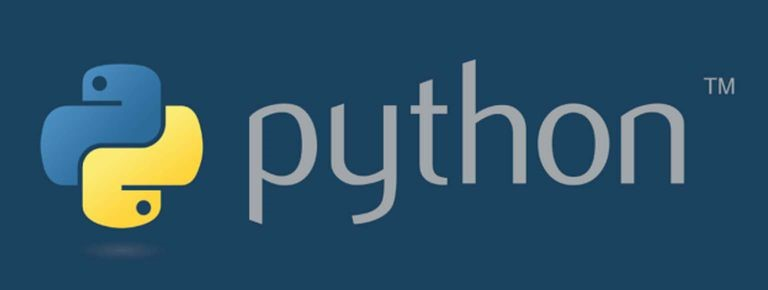
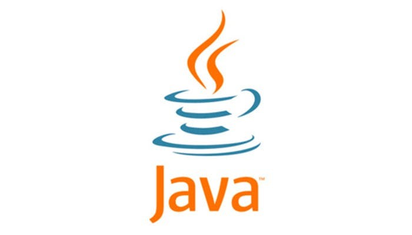
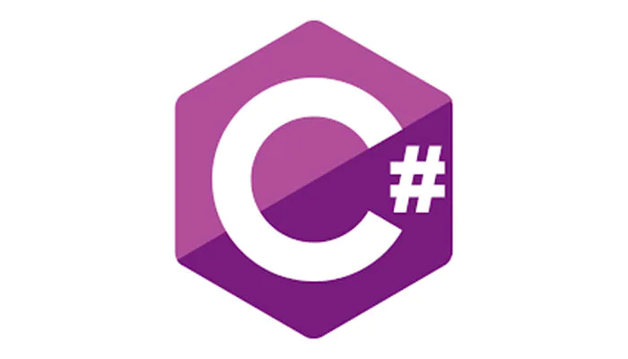
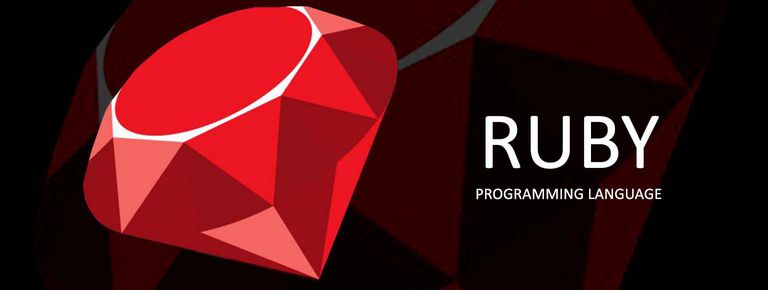
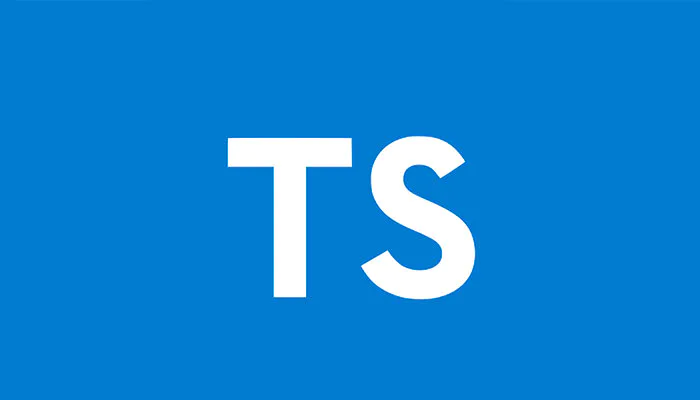

- Si ya estás dentro del mundo de la programación web, seguro sabrás que este es uno de los lenguajes de programación más poderosos y flexibles.
Fue creado hace 25 años durante “la guerra de los navegadores web” por empleados de la empresa Netscape. Según el TIOBE Index, JavaScript se ha clasificado entre los 10 lenguajes de programación más utilizados en todo el mundo y uno de los más populares durante varios años de forma constante.
Este lenguaje de programación —orientado a objetos, basado en prototipos y multiparadigma— es interpretado, es decir, no requiere de compilación, ya que está pensado para correr en el navegador. Y cabe mencionar que JavaScript está soportado por una inmensa comunidad.
Es el lenguaje de programación web más utilizado en todo el mundo, ya que prácticamente todos los sitios web —incluso si fueron construidos con otro lenguaje—, tienen algo de JavaScript en ellos. Por eso su gran relevancia cuando hablamos del front-end.
Además, empresas de gran talla han dirigido esfuerzos creando frameworks como ReactJS de Facebook, AngularJS de Google o NodeJS, que permiten que el código escrito en JavaScript corra en el lado del servidor, es decir, pensado para el back-end. Por eso, es uno de los lenguajes de programación más demandados para el 2021. - Creado por Guido Van Rossum en la década de los 90, este lenguaje multiparadigma y multipropósito fue concebido como un “side-project” al igual que muchas tecnologías de esta lista de lenguajes de programación más usados.
Python ha ganado mucha relevancia en industrias muy populares como la Inteligencia Artificial, el Machine Learning, entre otras.
Parte de la filosofía de Python es tener una curva de aprendizaje muy corta y una buena experiencia para el desarrollador, incluso tan fácil para que los niños puedan escribir código en este lenguaje de programación.
En 2008 tuvo un gran crecimiento cuando se introdujeron grandes cambios y nuevas funcionalidades en su versión Python 3. De hecho, la popularidad de Python ha aumentado un 30.17% en el 2021 en comparación con el 2020, de acuerdo con el índice PYPL.
Por eso, seguiremos viendo grandes avances y proyectos llevados a la realidad gracias a este lenguaje de programación en el 2021.
Python incrementó en popularidad el 2017 al 2018. Al igual que PHP, Python también cuenta con infraestructuras web asociadas que hacen más conveniente el desarrollo de aplicaciones web usando dicho lenguaje. -  Java es uno de los lenguajes de programación más disruptivos de la historia, ya que en los 90 muchas empresas desarrollaban sus herramientas principalmente en C++, el cual era complicado y dependiente de la plataforma en la que este se desarrollara.
James Gosling y su equipo crearon una tecnología que prometía ser más fácil de aprender. Por eso es uno de los lenguajes de programación más utilizados en la actualidad.
Este es un lenguaje de programación orientado a objetos e independiente de su plataforma, por lo que el código que ha sido escrito en una máquina también correrá en otra, incluso, con sistemas operativos distintos gracias a la Máquina Virtual Java (o JVM por sus siglas en inglés).
Es por esto que está presente entre los 3 primeros lugares de los lenguajes de programación más usados en 2021. Así lo confirman los informes de RedMonk, en los que Java ocupa el tercer lugar, por debajo de JavaScript y Python solamente.
De hecho, empresas como Adobe, Amazon o Flipkart están utilizando este lenguaje de programación, y ofrecen excelentes oportunidades profesionales a los desarrolladores de Java.
Java tiene una enorme demanda en el mercado laboral, con incentivos muy atractivos. No puedes dejar de aprender este lenguaje. Este es, sin lugar a dudas, uno de los mejores lenguajes que los programadores pueden aprender. - C# pertenece a la familia de lenguajes de programación de Microsoft, y fue desarrollado en el año 2000 como parte de la primera versión de la prestigiosa infraestructura .NET de Microsoft. C# es muy similar a Java en términos de sus capacidades.
C# combina lo robusto del lenguaje C++, con las funcionalidades avanzadas de Java. Por lo tanto, si eres bueno programando en Java, es extremadamente fácil aprender a programar en C#, y viceversa.
El lenguaje C# es utilizado para desarrollar casi todos los tipos de aplicaciones que vienen con el entorno de desarrollo integrado Visual Studio. Si estás desarrollando una aplicación web dinámica en ASP.NET será necesario que escribas código en C# o VB (Visual Basic) para escribir el mecanismo de manejo de trasfondo.
Si estás desarrollando una aplicación de Windows Forms, o de Windows Presentation Foundation (WPF), también será necesario que escribas código en C#. Similarmente, si vas a desarrollar una aplicación para el Windows Phone también tendrás que escribir código en C#.
C# combina lo robusto del lenguaje C++, con las funcionalidades avanzadas de Java. Por lo tanto, si eres bueno programando en Java, es extremadamente fácil aprender a programar en C#, y viceversa. - Este gran lenguaje de programación multipropósito fue creado en la década de los 90, pensado inicialmente como una Interfaz de Entrada Común (o CGI) por el groenlandés Rasmus Lerdorf, el cual lo utilizaba para mantener su propio sitio web (de ahí el nombre de este lenguaje: “personal homepage”).
Desde entonces, PHP fue evolucionando hasta convertirse en el lenguaje de programación que es hoy en día, utilizado principalmente para desarrollar aplicaciones en el lado del servidor web, garantizando páginas estables y con buen rendimiento.
Hoy vemos a PHP en el quinto lugar de este ranking de lenguajes de programación del 2021, ya que su popularidad ha ido disminuyendo desde la llegada de JavaScript en la misma década.
Sin embargo, a este lenguaje de programación debemos agradecerle mucho, ya que ha sido la tecnología que ha dado vida a muchas grandes herramientas y plataformas que seguimos utilizando al día de hoy, como: WordPress, Facebook, Gmail, Wikipedia, entre otras.
PHP es fácil de aprender – simplemente tienes que incrustar el código en HTML. Además, existen cientos de plataformas basadas en PHP como Joomla, WordPress, Drupal, las cuales te permiten desarrollar sitios web de forma más conveniente. - Este lenguaje de programación multiparadigma vio la luz en la década del 70, y como te imaginarás, está fuertemente influenciado y basado en C, con la finalidad de agregarle funcionalidades de orientación a objetos.
Al igual que su predecesor, este lenguaje de programación compila directamente a instrucciones de máquina y ofrece acceso completo al hardware, pero de una manera más compleja. Se utiliza ampliamente en bases de datos, navegadores web, compiladores o videojuegos.
Aunque C++ ha ido evolucionando y tiene muchas ventajas sobre el hardware, este comenzó a perder popularidad contra Java en la década de los 2000, debido a que es uno de los lenguajes más difíciles de aprender. Es por eso que lo vemos hoy en el sexto lugar en esta lista de los lenguajes de programación más utilizados del 2021.
C++ es uno de los lenguajes más utilizados en el mundo, y es por eso que tiene un lugar muy merecido en la lista de los lenguajes de programación más usados.
Además, existe una amplia demanda de desarrolladores de C++ en el mercado laboral de desarrolladores, y se espera que esta demanda siga aumentando todavía más. - Ruby fue creado en 1995 por Yukihiro Matsumoto como un lenguaje de scripting orientado a objetos, este lenguaje de programación de alto nivel eventualmente evolucionó a un lenguaje interpretado con tipado dinámico. Ruby es multiparadigma y multipropósito, y se encuentra implementado en el lenguaje de programación C.
Al igual que Python, Ruby se encuentra enfocado en la productividad del desarrollador y si tu intención es aprender a programar, esta puede ser una muy buena opción debido a su sencillez.
Este lenguaje de programación ha sido utilizado en proyectos como Twitter, GitHub y Airbnb, y posee una gran cantidad de herramientas y quizás el framework más disruptivo que se utiliza para desarrollar en el lado del servidor: Ruby on Rails.
Ruby es considerado como una combinación de varias de las funcionalidades más famosas de Lisp, Eiffel y Perl. Ruby también tiene una amplia demanda en el mercado laboral, y los desarrolladores de Ruby actualmente reciben un muy buen pago por su trabajo.
Similar a Python, Ruby también es un lenguaje de programación simple y legible enfocado principalmente en el desarrollo de aplicaciones web.  Compiladores como el de Python y PHP están escritos en C; esto nos habla de la gran relevancia que ha tenido para nuestra época, pues de este han salido diversos tipos de lenguajes de programación.
Compiladores como el de Python y PHP están escritos en C; esto nos habla de la gran relevancia que ha tenido para nuestra época, pues de este han salido diversos tipos de lenguajes de programación.
Dennis Ritchie desarrolló el lenguaje C en 1972 en los Laboratorios Bell. El lenguaje C tiene el legado que tiene debido a que es el ancestro de varios lenguajes avanzados de programación como C++, Java, C#, JavaScript y Perl.
Este lenguaje de procedimientos y de propósito general, es uno de los primeros lenguajes de programación y ha servido inspiración para otros lenguajes como lo vimos con C++, que también ofrece acceso directo a la memoria y al hardware de las computadoras.
El lenguaje C es utilizado principalmente para desarrollar aplicaciones de bajo nivel, ya que se considera el lenguaje más cercano al hardware entre todos los lenguajes, con la excepción del lenguaje Assembly.
C definitivamente es uno de los mejores lenguajes de programación que puedes aprender, especialmente para novatos quienes desean forjar una carrera a largo plazo en el área de la programación.- El crecimiento de TypeScript fue exponencial en 2020, ya que los estudios de Stack Overflow de inicios de ese año mostraron que este lenguaje —relativamente nuevo—, estaría situado en los últimos lugares de popularidad, pero al final del año se encontró dentro de los primeros 5 lenguajes de programación más utilizados en el mundo.
La razón de su aceptación es que es fácil para los desarrolladores escribir y mantener códigos. Empresas como Google, Slack, Medium y Accenture utilizan este lenguaje de programación.
Este lenguaje compila en JavaScript nativo y se convierte en código de TypeScript, pasando por los mismos procesos de JS sin que el navegador ‘se entere’ de que esto sucedió.
Además, este lenguaje de programación ofrece una descripción completa de cada componente del código y se puede utilizar para desarrollar grandes aplicaciones con una sintaxis estricta y menos errores
Esta tecnología creada en el 2012 por Microsoft tiene muchas funcionalidades o mecanismos de la programación orientada a objetos haciendo que cualquier aplicación o sitio construido con este lenguaje de programación sea más escalable.